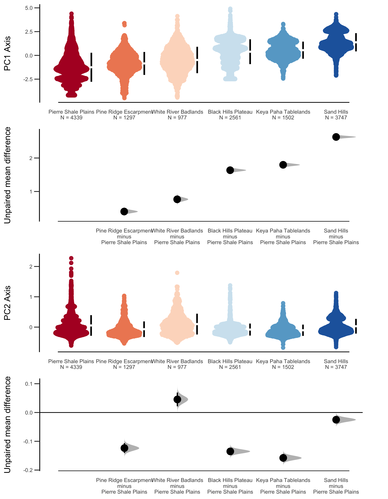
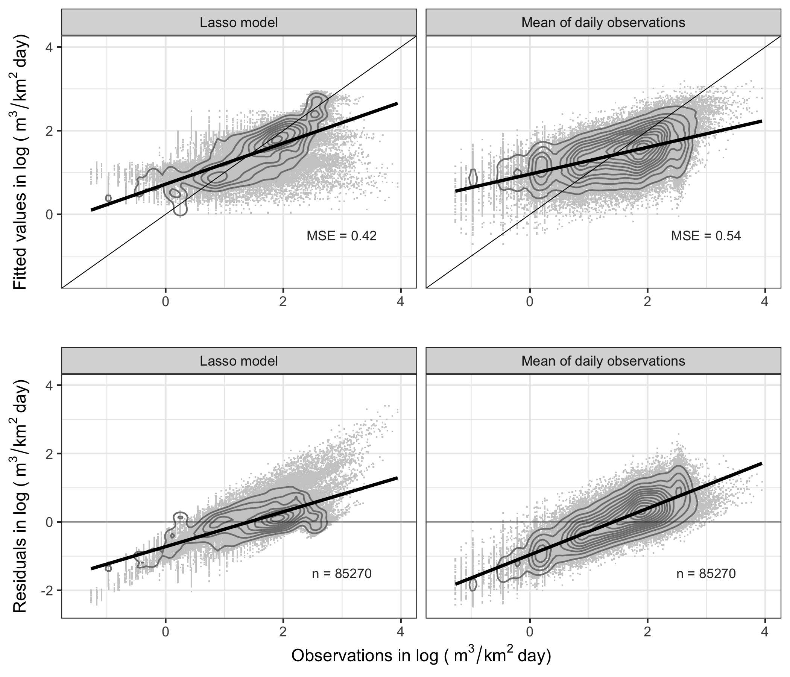

“Finding your bug is a process of confirming the many things that you believe are true — until you find one which is not true.” – Norm Matloff
2019-12-17
Let’s get started…
Research Motivation
A majority of streams on the Pine Ridge and Rosebud reservations in SW South Dakota lack streamflow records.
Watersheds in the region seem to differ by watershed storage – which is difficult to measure directly and varies in time and space.
Top-down modeling approaches might be a useful approach for watershed classification and hydrologic parameter identification.
Broad research purpose is to extend short station records and estimate streamflow for ungaged watersheds for the region.
Description of study area & data
- SW South Dakota and NW Nebraska - semi-arid mid-latitude climate (BSk) – wet springs, hot summers, dry cold winters.
- USGS stream gage (N = 42) records – non-karstic sedimentary watersheds – no dams – for water years 1980-2018.

Classification approach
Box-Cox transform of daily (q1), 7-day (q7) and 30-day (q30) flow depths.
Unsupervised classification using a finite mixture model (Fraley 2016).
Supervised classification by a bias-corrected and accelerated bootstrapping by ecoregion (DiCiccio, Thomas, and Bradley Efron, 1996).
Finite mixture model classification
- Soft clusters identified streamflow ‘type’.
- Type-1 ~ low flows ~ correlates with q1 and q7;
- Type-9 ~ high flows ~ correlates with q30.
- Lots of overlap, note increasing hydrologic export among ecoregions…
- X-axis ~ hydrologic export and Y-axis ~ streamflow evenness (q30 - q1).

Bootstrapped estimates by ecoregion
- Hydrologic export (PC1) among ecoregions are significantly different at the 95% CI.
- Evenness (PC2) groups into low evenness (e.g. ‘flashy’ watersheds) and high evenness watersheds.
- Note: Sandhills watersheds are both high-export and high-evenness ~ also two modes.
- New question–what are driving clustering results?

Generalized Linear Models (GLMs)
Trained GLMs ~ 80/20 split, 5-fold cross-validation, selected best-fit model, fitted holdout data, and evaluated against a null model of mean daily flow depths.
- Response variable = log(q1).
Explanatory variables = hydrologic landscape metrics, ecoregion, seasonality, trend.
- Hydrologic landscape metrics for GLM input ~ derived as zonal statistics of 30m input rasters (N=15 metrics).

Results - GLM and null models overpredict low flows and underpredict high flows. Ecoregion and hydrologic conductivity are key drivers of GLMs
GLM regression results
Key variables ~ ecoregion & hydrologic conductivity
| Explanatory variable | Transformation | Pierre Shale Plains | Pine Ridge Escarpment | White River Badlands | Black Hills Plateau | Keya Paha Tablelands | Sand Hills |
|---|---|---|---|---|---|---|---|
| Intercept | 0.78 | 1.03 | 1.12 | 1.64 | 1.73 | 2.07 | |
| Percent cover | ln(x) | 0.24 | 0.00 | 0.00 | 0.00 | 0.00 | 0.00 |
| Hydrologic conductivity | ln(x) | 0.19 | 0.00 | 0.00 | 0.00 | 0.19 | 0.08 |
| Summer proximity | 0.17 | 0.17 | 0.24 | 0.04 | 0.07 | 0.03 | |
| Spring proximity | 0.15 | 0.26 | 0.26 | 0.01 | 0.14 | 0.11 | |
| Year | 0.10 | 0.03 | 0.07 | 0.08 | 0.00 | 0.04 | |
| Watershed area | 1/ln(x) | 0.02 | 0.05 | 0.00 | 0.24 | 0.03 | 0.00 |
| Drainage density | 0.01 | 0.00 | 0.00 | 0.03 | 0.00 | -0.09 | |
| Watershed slope | ln(x) | 0.00 | 0.08 | 0.00 | -0.22 | 0.01 | 0.11 |
| Watershed length to width ratio | ln(x) | -0.11 | 0.05 | 0.00 | -0.31 | -0.17 | -0.06 |
| Watershed outlet elevation | sqrt(x) | -0.17 | 0.00 | -0.07 | 0.00 | 0.00 | 0.00 |
Flow duration curves
Results indicate temporal differences in watershed storage

Greater % of time exceeded corresponds with lower q1 depths.
Key findings
Hydrologic export to streams depends on watershed storage ~ watershed storage volume varies by ecoregion and antecedent moisture conditions
- Low export watersheds are boom and bust ~ low water capture - drying out during mid-range to dry antecedent moisture conditions. Low drought resilience streams
- Moderate export watershed storages active throughout a wide range of antecedent moisture conditions ~ Moderate drought resilience streams
High export watershed storages are excess capacity ~ attenuating overland flow. Long-duration floods during high-flow conditions ~ High drought resilience streams
Incorporating research
Meeting Tribal water resource information needs
- Short-record or discontinued gages ~ incorporate regionalization by ecoregion to extend records for flood-frequency analysis ~ partnering with SDSMT to begin in Spring 2000 for Pine Ridge White Clay district.
- Ungaged watersheds ~ use nearest gaged stations selected by ecoregion for streamflow estimation ~ Incorporation into 44 water quality stations without streamflow for load duration curves to improve water quality.
- Stream health metrics ~ incorporate standardized precipitation indices into macroinvertebrate stream health metrics for EPA 106 & 319 reporting.